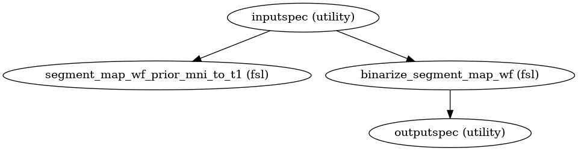
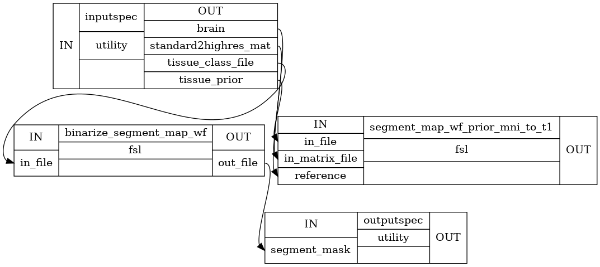

Segmentation Workflow¶
- CPAC.seg_preproc.check_if_file_is_empty(in_file)[source]¶
Raise exception if regressor fie is empty.
- Parameters
- in_filenii file (string)
regressor file
- Returns
- in_filestring
return same file
- CPAC.seg_preproc.create_seg_preproc_antsJointLabel_method(wf_name='seg_preproc_templated_based')[source]¶
Generate the subject’s cerebral spinal fluids, white matter and gray matter mask based on provided template, if selected to do so.
- Parameters
- wf_namestring
name of the workflow
- Returns
- seg_preproc_templated_basedworkflow
Workflow Object for Segmentation Workflow
Notes
Workflow Inputs:
inputspec.brain : string (existing nifti file) Anatomical image(without skull) inputspec.template_brain : string (existing nifti file) Template anatomical image(without skull) inputspec.template_segmentation : string (existing nifti file) Template segmentation image(without skull)
Workflow Outputs:
outputspec.csf_mask : string (nifti file) outputs CSF mask outputspec.gm_mask : string (nifti file) outputs gray matter mask outputspec.wm_mask : string (nifti file) outputs White Matter mask
- CPAC.seg_preproc.erosion(roi_mask=None, erosion_mm=None, erosion_prop=None)[source]¶
Returns eroded tissue segment mask
- Parameters
- roi_maskstring
Path to binarized segment (ROI) mask
- erosion_propfloat
Proportion of erosion segment mask
- Returns
- eroded_roi_maskstring
Path to eroded segment mask
- CPAC.seg_preproc.hardcoded_antsJointLabelFusion(anatomical_brain, anatomical_brain_mask, template_brain_list, template_segmentation_list)[source]¶
run antsJointLabelFusion.sh
- Parameters
- anatomical_brainstring (nifti file)
Target image to be labeled.
- anatomical_brain_maskstring (nifti file)
Target mask image
- template_brain_listlist
Atlas to be warped to target image.
- template_segmentation_listlist
Labels corresponding to atlas.
- Returns
- multiatlas_Intensitystring (nifti file)
- multiatlas_Labelsstring (nifti file)
- CPAC.seg_preproc.mask_erosion(roi_mask=None, skullstrip_mask=None, mask_erosion_mm=None, mask_erosion_prop=None)[source]¶
Returns eroded segment mask and skull-stripped brain mask
# This functionality is adapted from poldracklab/niworkflows: # https://github.com/poldracklab/niworkflows/blob/master/niworkflows/interfaces/utils.py # https://fmriprep.readthedocs.io/ # https://poldracklab.stanford.edu/ # We are temporarily maintaining our own copy for more granular control.
- Parameters
- roi_maskstring
Path to binarized segment mask
- skullstrip_maskstring
Path to skull-stripped brain mask
- mask_erosion_propfloat
Proportion of erosion skull-stripped brain mask
- Returns
- output_roi_maskstring
Path to eroded segment mask
- eroded_skullstrip_maskstring
Path to eroded skull-stripped brain mask
- CPAC.seg_preproc.pick_tissue_from_labels_file(multiatlas_Labels, csf_label=[4, 14, 15, 24, 43], gm_label=[3, 42], wm_label=[2, 41])[source]¶
Pick tissue mask from multiatlas labels file based off of FreeSurferColorLUT https://surfer.nmr.mgh.harvard.edu/fswiki/FsTutorial/AnatomicalROI/FreeSurferColorLUT or user provided label value
- Parameters
- multiatlas_Labelsstring (nifti file)
- csf_labellist
a list of integer label values corresponding to CSF in multiatlas file
- gm_labellist
a list of integer label value corresponding to Gray Matter in multiatlas file
- wm_labellist
a list of integer label value corresponding to White Matter in multiatlas file
- Returns
- csf_maskstring (nifti file)
- gm_maskstring (nifti file)
- wm_maskstring (nifti file)
- CPAC.seg_preproc.pick_wm_class_0(tissue_class_files)[source]¶
Returns the csf tissue class file from the list of segmented tissue class files
- Parameters
- tissue_class_fileslist (string)
List of tissue class files
- Returns
- filestring
Path to segment_seg_0.nii.gz is returned
- CPAC.seg_preproc.pick_wm_class_1(tissue_class_files)[source]¶
Returns the gray matter tissue class file from the list of segmented tissue class files
- Parameters
- tissue_class_fileslist (string)
List of tissue class files
- Returns
- filestring
Path to segment_seg_1.nii.gz is returned
- CPAC.seg_preproc.pick_wm_class_2(tissue_class_files)[source]¶
Returns the white matter tissue class file from the list of segmented tissue class files
- Parameters
- tissue_class_fileslist (string)
List of tissue class files
- Returns
- filestring
Path to segment_seg_2.nii.gz is returned
- CPAC.seg_preproc.pick_wm_prob_0(probability_maps)[source]¶
Returns the csf probability map from the list of segmented probability maps
- Parameters
- probability_mapslist (string)
List of Probability Maps
- Returns
- filestring
Path to segment_prob_0.nii.gz is returned
- CPAC.seg_preproc.pick_wm_prob_1(probability_maps)[source]¶
Returns the gray matter probability map from the list of segmented probability maps
- Parameters
- probability_mapslist (string)
List of Probability Maps
- Returns
- filestring
Path to segment_prob_1.nii.gz is returned
- CPAC.seg_preproc.pick_wm_prob_2(probability_maps)[source]¶
Returns the white matter probability map from the list of segmented probability maps
- Parameters
- probability_mapslist (string)
List of Probability Maps
- Returns
- filestring
Path to segment_prob_2.nii.gz is returned
- CPAC.seg_preproc.process_segment_map(wf_name, use_priors, use_custom_threshold, reg_tool)[source]¶
This is a sub workflow used inside segmentation workflow to process probability maps obtained in segmentation. Steps include overlapping of the prior tissue with probability maps, thresholding and binarizing it and creating a mask that is used in further analysis.
- Parameters
- wf_namestring
Workflow Name
- use_priorsboolean
Whether or not to use template-space tissue priors to further refine the resulting segmentation tissue masks.
- use_thresholdlist
Choose threshold to further refine the resulting segmentation tissue masks.
- use_erosionboolean
Whether or not to erode the resulting segmentation tissue masks.
- use_antsboolean
Whether or not to use ANTs or FSL for transform application.
- Returns
- preprocworkflow
Workflow Object for process_segment_map Workflow
Notes
Workflow Inputs:
inputspec.brain : string (existing nifti file) Anatomical image(without skull) inputspec.standard2highres_mat : string (existing affine transformation .mat file) path to transformation matrix from mni space to anatomical space inputspec.threshold : float threshold value inputspec.tissue_prior : string (existing nifti file) path to FSL Standard Tissue prior image inputspec.probability_tissue_map : string (nifti file) tissue Probability map obtained from fsl FAST
Workflow Outputs:
outputspec.segment_mni2t1 : string (nifti file) path to output CSF prior template(in MNI space) registered to anatomical space outputspec.segment_combo : string (nifti file) path to output image containing overlap between csf probability map and segment_mni2t1 outputspec.segment_thresh : string (nifti file) path to output image after Thresholding segment_combo outputspec.segment_bin : string (nifti file) path to output image after binarizing segment_thresh outputspec.segment_erosion : string (nifti file) path to output image after eroding segment_bin outputspec.segment_mask : string (nifti file) path to output image after masking segment_combo with its tissue prior in t1 space
Order of commands:
Register tissue prior in MNI space to t1 space.
Threshold segment probability map
Binarize threshed segment probability map
Erose binarized segment mask
Generate segment mask, by applying tissue prior in t1 space to thresholded binarized segment probability map
Error
Unable to execute python code at exec.py:31:
process_segment_map() takes 4 positional arguments but 5 were given
High Level Graph:
Detailed Graph:

{kind=link}
{kind=link}